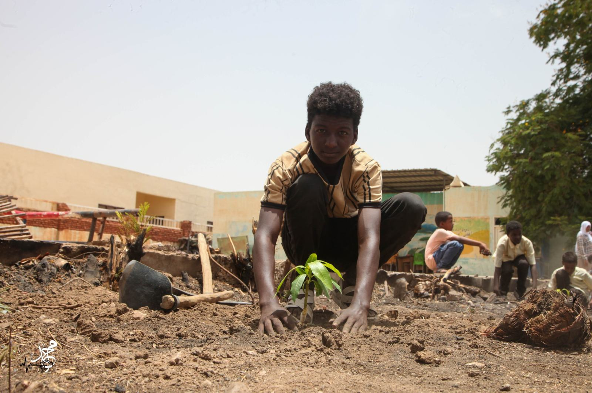

من حملة تشجير إلى مشروع بيئي ومستدام
منصّة رقمية تدعم مبادرة زراعة الأشجار في جامعة بحري: نوثّق كل شجرة، نتابع حالتها، وننسّق الرعاية بمشاركة الطلاب والكليات.
0شجرة موثّقة
0كليات مشاركة
0شتلة جاهزة للزراعة
كيف تشارك؟
ثلاث خطوات لتترك أثراً
- 1
اختر شتلتك
تصفّح دليل الأشجار والنباتات واختر ما يناسبك.
- 2
تواصل مع المبادرة
عبر واتساب، أو سلّمها مباشرةً لمشتل كلية الزراعة.
- 3
تُسجَّل باسمك
تُزرع في الجامعة ويظهر أثرها على الخريطة.
من أرض الجامعة
الأثر الحقيقي يبدأ
الأثر الحقيقي يبدأ
بشتلة صغيرة.
خطوات بسيطة، وأيادٍ متعاونة، ومساحات تتحول مع الوقت إلى بيئة أجمل.



من أرض الجامعة
الأثر الحقيقي يبدأ
الأثر الحقيقي يبدأ
بشتلة صغيرة.
خطوات بسيطة، وأيادٍ متعاونة، ومساحات تتحول مع الوقت إلى بيئة أجمل.

تبنَّ شجرة
أحضرها للمشتل وتُسجَّل باسمك في الموقع، وكل شجرة تصنع فرقاً.